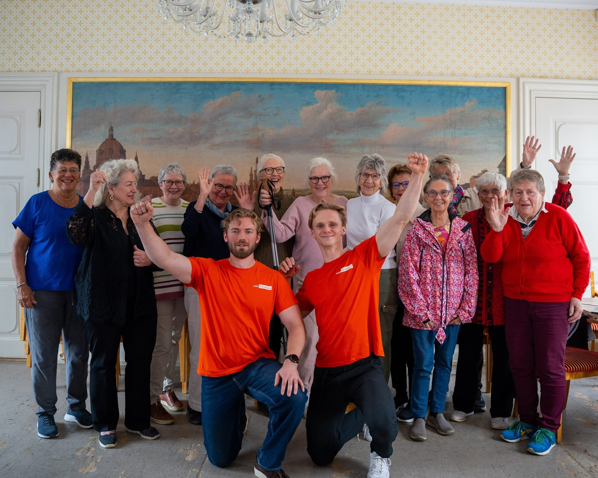

Hva kan en hjelper hjelpe deg med?
Her ser du hva en hjelper kan ta hjemme hos deg, og hva vi ikke gjør. Du betaler for timen og bestemmer selv hva du bruker den til. Flere ting kan tas på samme besøk.


Renhold
Gulvene blir vasket, og kjøkkenet og badet blir rene. Hjelperen bruker utstyret og vaskemidlene du har hjemme, og når gulvene er vasket, er det ofte tid til en kopp kaffe.
Dette kan hjelperen gjøre
- Støvsuge og vaske gulvene
- Kjøkkenbenken, komfyren og vasken
- Badet: vask, toalett og flater
- Skifte sengetøy
- Vinduer som kan vaskes trygt innenfra eller fra bakken
- Vaske trappa
- Rydde, også storopprydding
Dette gjør vi ikke
- Vinduer og flater som krever stige
- Tunge løft
Handling og småjobber
Lyspæra som har gått, posten som har hopet seg opp, eller en tur på butikken. Det er de små tingene som blir liggende, og de kan tas mens hjelperen er der.
Dette kan hjelperen gjøre
- Handle mat, eller følge deg til butikken
- Gå ærend for deg
- Ta inn posten
- Bytte lyspærer og batterier
- Sette sammen møbler
- Bære ut søppel og bære inn ved
- Beise og olje
Dette gjør vi ikke
- Arbeid som krever fagfolk, som elektriker eller rørlegger
- Tunge løft og arbeid i høyden
- Kjøre deg i bil


Mobil, PC og TV
Hjelperen sitter ved siden av deg, på din egen mobil og iPad, og du kan spørre om det samme flere ganger. Vil du heller ha hjelpen på skjermen, går det også an på FaceTime.
Dette kan hjelperen gjøre
- Mobilen: ringe, sende meldinger og ta bilder
- iPad og nettbrett
- E-post, også på PC
- Videosamtaler, for eksempel på FaceTime
- TV, internett og printer
- Kjenne igjen meldinger og anrop som kan være svindel
Dette gjør vi ikke
- Nettbank og BankID
- Betalinger
- Passord og PIN-kode: dem taster du selv


Hage og snømåking
Hjelperen kan ta det som må gjøres ute gjennom året: gress og luking om sommeren, løv om høsten og snø om vinteren. Du bestemmer hva som skal gjøres, og hva du vil ta selv.
Dette kan hjelperen gjøre
- Klippe gresset og luke i bedene
- Rake løv og tømme blomsterpottene
- Bære lette hagemøbler inn før vinteren
- Måke trappa og stien til døra
- Strø når det er glatt
- Kjøre bort hageavfall, mot et tillegg
Dette gjør vi ikke
- Tak og takrenner
- Arbeid på stige
- Tunge løft


Kaffe, prat og følge
Noen ganger er det viktigste på besøket en kopp kaffe og noen å snakke med. Hjelperen kan også bli med ut, på tur, til butikken eller til legen.
Dette kan hjelperen gjøre
- En kopp kaffe og en lang prat
- Spise lunsj sammen
- Gå en tur
- Følge deg til legen eller en kontroll
Dette gjør vi ikke
- Helsehjelp og medisiner
- Personlig stell, som dusj og påkledning
- Kjøre deg i bil. Hjelperen går eller tar bussen sammen med deg.
Trenger du hjelp med noe vi ikke gjør?
Vi hjelper deg å finne riktig sted. Lurer du på noe som ikke står her, så spør oss i praten.
Hjemmesykepleien
Helse og medisiner.
Banken
Nettbank og BankID.
Elektriker eller rørlegger
Strøm og rør.
Hva det koster, og hvem som kommer
Det skal være enkelt å vite hva du får, før du bestemmer deg.
Du betaler for timen
690 kr i timen. Som medlem 552 kr i timen (20 % rabatt) og 300 kr i måneden, med fast avtale og samme hjelper.
Reise 150 kr per besøk, og et besøk er minst 1,5 time. Alle priser er inkl. mva.
Vi sier alltid fra om tillegg før vi begynner.
Ansatt og opplært hos oss
Alle hjelperne har taushetsplikt, og vi sjekker dem med intervju, referanser og skyggebesøk før de går alene.
Den første praten er gratis
Vi ringer deg og hører hva du trenger. Du forplikter deg ikke til noe, og det er ingen binding.
Ansvarsforsikring
Vi har ansvarsforsikring hos If, på inntil 10 millioner kroner per skadetilfelle.
Gode råd
Alle gode råd Hjelp i hverdagen
Hjelp i hverdagenLyspærer, batterier og ved: småjobbene som blir liggende
Pæra i leselampa og veden som skal inn, og hvor grensen mot fagfolk går.

Hjelp i hverdagenSelskap for eldre i Trondheim: noen å drikke kaffe med
Besøksvenn, frivilligsentraler og møteplasser: der du kan få selskap i Trondheim.
 Pris og praktisk
Pris og praktiskSlik søker du hjemmehjelp fra kommunen i Trondheim
Hvem du ringer, hva kommunen ser på, og hva du gjør hvis svaret blir nei.
Bestill en gratis prat
Fortell oss hva du trenger hjelp til. Du trenger ikke ha bestemt deg for noe. Vi ringer deg og tar oss god tid.
Hverdager 09–18411 24 968